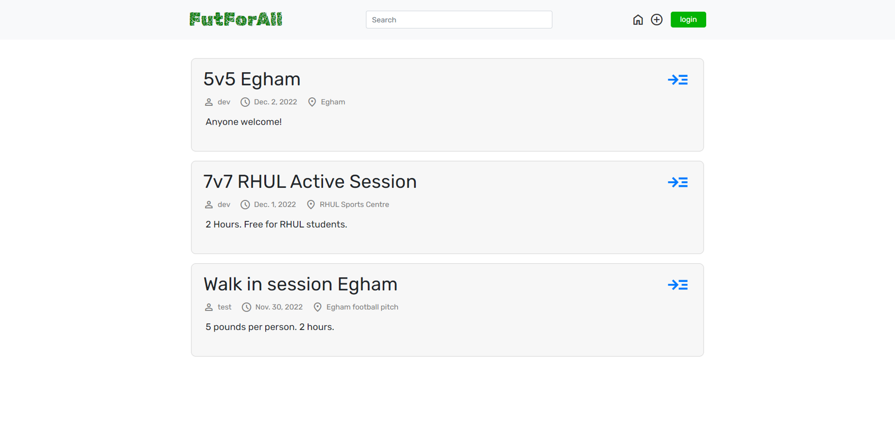

FutforAll
Final Year Individual Project Project Overview
I developed a web application to help amateur football players find and join local matches
as my final year individual project at Royal Holloway, University of London.
The app features match creation, user authentication, and more advanced functions like real-time notifications.
Key Features
- User Authentication: Sign-up, log-in, and profile pages.
- Match Management: Create and join matches with user-friendly interfaces.
- Notifications: Receive reminders and updates.
Technologies
- Backend: Django (Python)
- Frontend: Bootstrap, CSS, HTML
- Database: SQLite
Key Learnings and Challenges
- 1. Self-Learning and Adaptability:Despite starting with minimal knowledge and no prior experience, I learned and implemented everything from scratch within 3-4 months. This experience demonstrated my ability to self-teach and adapt to new challenges quickly.
- 2. Full-Cycle Development:I was responsible for every aspect of the website, from initial design and structure to domain setup and server hosting. This holistic approach gave me a comprehensive understanding of web development.
- 3. Maintenance and Communication:Post-launch, I maintained the website, which involved regular updates and improvements based on feedback. Communicating with the marketing manager, who had little technical knowledge, taught me how to explain complex concepts in simple, non-technical terms.
- 4. Major Renewal:After three years, I conducted a major renewal of the website’s design, applying more modern styles and ensuring responsiveness across all devices. This project highlighted my ability to stay updated with the latest web design trends and technologies.
Development Experience
Creating the Felixstowe International College website was an invaluable experience that demonstrated my self-motivation, goal-oriented approach, and ability to learn and deliver a complete product from scratch. It reinforced my belief that passion and the drive to learn are more critical than existing skills or knowledge.
This project is a testament to my capability to self-teach, adapt, and deliver high-quality solutions to real-world problems. It showcases my skills in web development, including design, implementation, and maintenance, as well as my ability to communicate effectively with non-technical stakeholders.
This project is a testament to my capability to self-teach, adapt, and deliver high-quality solutions to real-world problems. It showcases my skills in web development, including design, implementation, and maintenance, as well as my ability to communicate effectively with non-technical stakeholders.